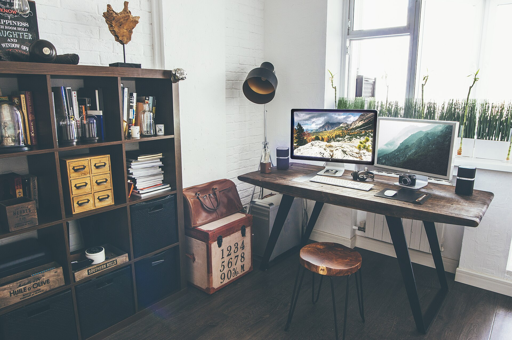
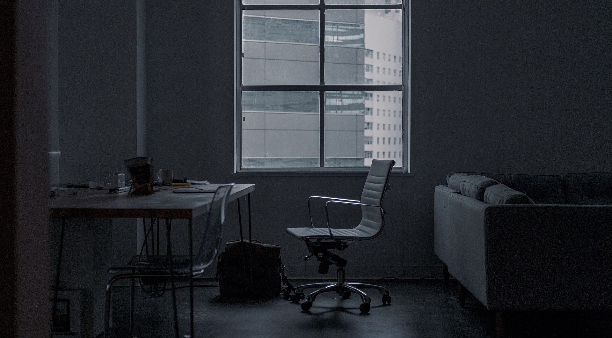
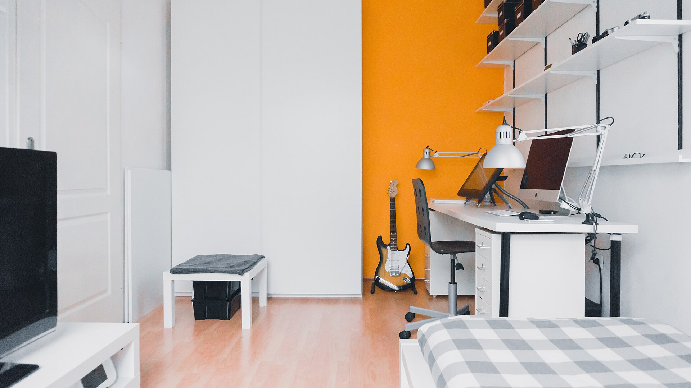
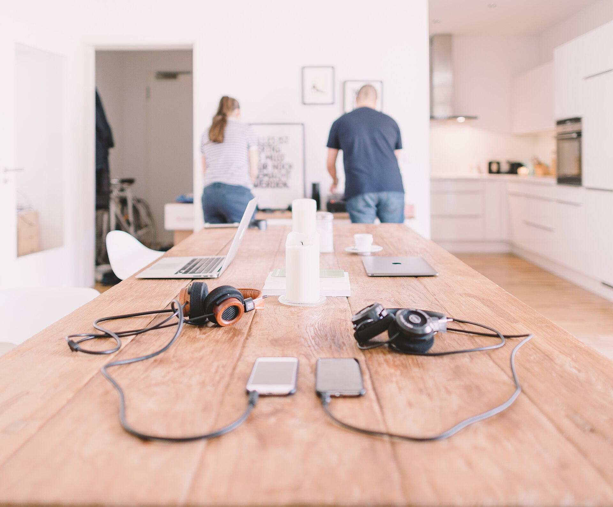
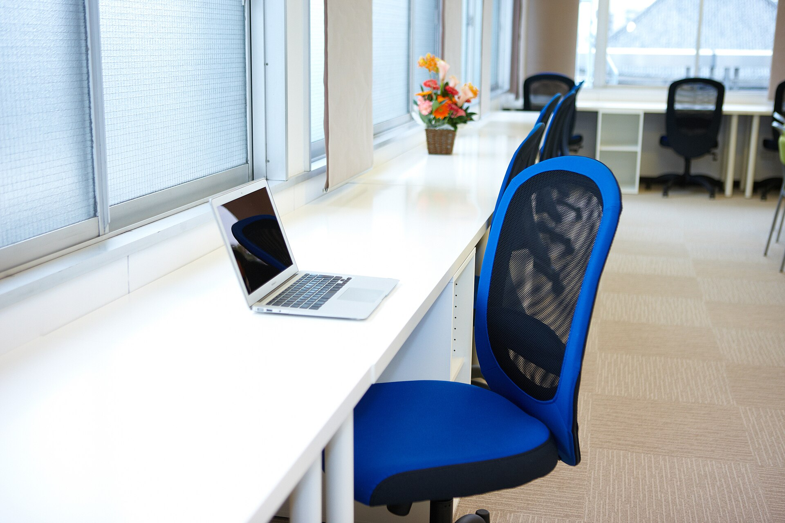
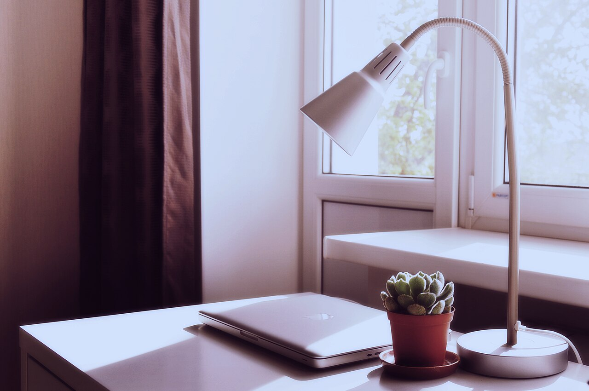
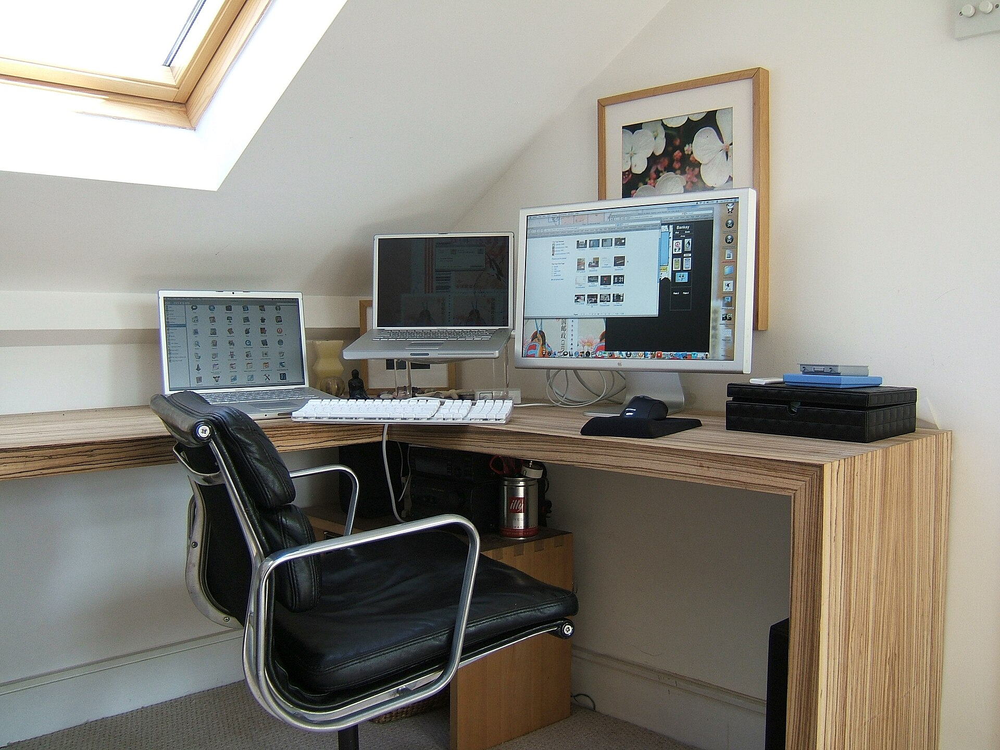

Workspace design, made personal
Design Your Ideal Workday
Discover ergonomic furniture and thoughtful workspace solutions designed around your space, daily routines, and working preferences.
Workspace inspiration
Three ways to make room for work
Every home asks something different of a desk. These illustrative layouts show how the same ergonomic thinking adapts to different rooms and routines.

A room set up for the long day
With a whole room to plan, you can think about desk depth, screen distance, daylight and where everything lives, so the space supports focus instead of competing with it.

A desk that earns its corner
In a bedroom, hallway or spare nook, a slim desk, a compact chair and vertical storage can make a small footprint work.

Work that shares the table
At a kitchen table or in a living room, flexibility matters most: equipment that sets up and clears quickly, and seating that suits more than one person.
These are illustrative examples, not customer projects.
Find your setup
Find the right setup for your space
Start with what your room and routine actually allow. Choose a topic to see what to think about first.
Start with the room you have
Measure before you browse. The space around a desk matters as much as the desk itself.
- Wall length, and any slope, window or radiator in the way
- Floor space for the chair to move and turn
- Where sockets and daylight sit
Plan around what you use
A laptop, a single monitor and a dual-screen setup each need different desk depth and different support.
- How many screens, and how far you sit from them
- Whether a monitor arm or stand would free up the desk
- Where the keyboard, mouse and notes sit in relation to the screen
Give everything a place
Storage keeps the work surface for work. Decide what lives on the desk, within reach, or out of sight.
- Paper, files and equipment you use daily or rarely
- Cables, chargers and power strips
- Shelves, drawers or wall space you could use
Check size and flexibility
The right piece has to fit through the door, fit the room and suit everyone who uses it.
- Desk width and depth against your available wall
- Adjustable height if more than one person will use it
- Whether the setup needs to fold away or move
Furniture options
Understand your ergonomic furniture options
The main categories we work with, and what each is for. Browse the full range on the Products page.
-

Ergonomic chairs
Seating with adjustable parts, chosen to suit your desk and how long you sit.
Explore chairs -

Height-adjustable desks
Work surfaces that change height, so the desk can be matched to the task and the person.
Explore desks -

Monitor arms & laptop stands
Ways to raise and position screens, and to free up space on the desk below.
Explore arms & stands -

Keyboards, mice & desk accessories
Input devices and everyday desk essentials arranged within comfortable reach.
Explore accessories -

Footrests & organisation
Supports for your feet, and tidy storage that keeps the work surface usable.
Explore footrests & organisers -

Workspace lighting
Task lighting that helps you see your work while keeping glare off the screen.
Explore lighting
Workspace planning
Plan a more thoughtful workspace
A well-organised workstation comes from small decisions that work together. These are the points we look at first.

Chair and desk suitability
Seat and desk heights that suit each other and the person using them.
Screen height and viewing position
A screen placed directly ahead, at a height and distance you can view comfortably.
Keyboard and mouse placement
Input devices kept close enough to reach without stretching.
Lighting and glare
Daylight and task light positioned so the screen stays easy to read.
Cable management and usable desk space
Cables routed away and everyday items within reach, so the surface stays clear.
General planning guidance for illustration. It is not medical advice.
How consultation works
How workspace consultation works
Three steps, from describing your space to planning what to do with it.
-
Share Your Needs
Describe your room, work routine, available space, and priorities.
-
Explore Suitable Options
Review relevant furniture categories and workspace considerations.
-
Plan Your Setup
Receive guidance on furniture selection, positioning, and practical workspace improvements.
Your workspace, your way
Make More of Your Workspace
Start with your space, your priorities, and the way you work. Explore practical furniture options or discuss your setup with us.